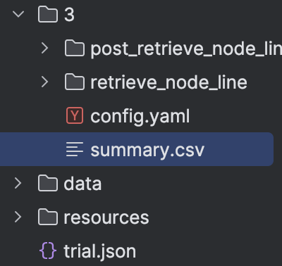

Tutorial¶
Tip
Before start this tutorial, make sure you installed AutoRAG. To install it, please check Installation.
Colab Tutorial
Do you use Colab? You can check out Colab tutorial at here.
Prepare Evaluation Dataset¶
First, you have to prepare an evaluation dataset for your RAG pipeline. Making a good evaluation dataset is the key to getting a good RAG pipeline. So, you need to focus on the quality of your evaluation dataset. Once you have it, the optimal RAG pipeline can be found using AutoRAG easily.
So, for users who want to make a good evaluation dataset, we provide a detailed guide at here.
For users who want to use a pre-made evaluation dataset, we provide example datasets at here.
Also, you can check out sample datasets at huggingface. You can download it manually using huggingface datasets library.
Attention
Don’t forget to split train and test dataset. It is common mistake to not split dataset, but it will occur overfitting issue. We highly recommend you to optimize RAG pipeline with train dataset, and evaluate whole pipeline with test dataset later.
After you prepare your evaluation dataset, please keep in mind the path to your dataset.
Note: Dataset Format
Make sure there are two evaluation datasets, qa dataset and corpus dataset. And you must save it as parquet format. If you don’t know about specific columns and data types, check out the Data Format section.
Find Optimal RAG Pipeline¶
Let’s find an optimal RAG pipeline with AutoRAG!
After you prepare your evaluation dataset, you need to have a config yaml file.
There are few pre-made config yaml files at our GitHub repo sample_config folder.
We highly recommend using pre-made config yaml files for starter.
Download starter.yaml file to your local environment, and you are ready to go.
Write custom config yaml file
If you want to write your own custom config yaml file for detailed configuration and experiment, check out the optimization section.
Run below code at CLI, then AutoRAG automatically evaluate your dataset and find the best RAG pipeline for your dataset.
autorag evaluate --config your/path/to/default_config.yaml --qa_data_path your/path/to/qa.parquet --corpus_data_path your/path/to/corpus.parquet
Or you can use python code like below.
from autorag.evaluator import Evaluator
evaluator = Evaluator(qa_data_path='your/path/to/qa.parquet', corpus_data_path='your/path/to/corpus.parquet')
evaluator.start_trial('your/path/to/config.yaml')
Once it is done, you can see several files and folders created in your current directory.
These files and folders contain all information about the evaluation results and the best RAG pipeline for your data.

The First thing you can see might be a folder named after number, which is 3 in the above image.
This is the trial folder that contains all results that you run above.
The number is the trial number, and you can check when you run the evaluation at trial.json file.
And the most important file is summary.csv files.
You can check out which module and parameters are the best for your dataset.
And there are lots of details inside node line and node folders.
You can find out more information about folder structure and result files at here.
Want to specify project folder?
You can specify project directory with --project_dir option or project_dir parameter.
❗Restart a trial if an error occurs during the trial¶
If an error occurs during the trial, you can restart the trial.
If you had issues with the config.yaml file, you can modify the config.yaml file in the trail folder and run the
code below.
Run below code at CLI, then AutoRAG automatically restart evaluate.
autorag restart_evaluate --trial_path your/path/to/trial_folder
Or you can use python code like below.
from autorag.evaluator import Evaluator
evaluator = Evaluator(qa_data_path='your/path/to/qa.parquet', corpus_data_path='your/path/to/corpus.parquet')
evaluator.restart_trial(tiral_path='your/path/to/trial_path')
What if Trial_Path didn’t also create a First Node Line?
If the First Node Line folder has not been created in the trial path you want to restart, start_trial function will be executed instead of restart_trial.
Note that a new trial folder will be created, not a new restart result in that Trial Path.
Extract pipeline and evaluate test dataset¶
Now, it’s time to evaluate test dataset with a found RAG pipeline. For this, you can extract the optimal pipeline and save it to new config yaml file.
You can use the below code.
Remind that your trial folder is in the directory you run the Evaluator.
And the trial folder name is number, like 0, 1, 2, 3, and so on.
Run below code at CLI, then AutoRAG automatically extract the optimal pipeline and save it to a new yaml file.
autorag extract_best_config --trial_path your/path/to/trial_folder --output_path your/path/to/pipeline.yaml
Or you can use python code like below.
from autorag.deploy import extract_best_config
pipeline_dict = extract_best_config(trial_path='your/path/to/trial_folder', output_path='your/path/to/pipeline.yaml')
You can check out your pipeline yaml file at your/path/to/pipeline.yaml.
And then, run evaluation with test dataset again.
Caution
Run evaluation to another folder. Running evaluation with another dataset in same folder can cause serious malfunction.
autorag evaluate --config your/path/to/pipeline.yaml --qa_data_path your/path/to/qa_test.parquet --corpus_data_path your/path/to/corpus_test.parquet
It will evaluate your test dataset with the found RAG pipeline.
Deploy your optimal RAG pipeline¶
1. Run as a CLI¶
You can use a found optimal RAG pipeline right away with extracted yaml file.
from autorag.deploy import Runner
runner = Runner.from_yaml('your/path/to/pipeline.yaml')
runner.run('your question')
2. Run as an API server¶
You can run this pipeline as an API server.
Check out API endpoint at here.
from autorag.deploy import Runner
runner = Runner.from_yaml('your/path/to/pipeline.yaml')
runner.run_api_server()
autorag run_api --config_path your/path/to/pipeline.yaml --host 0.0.0.0 --port 8000
Want to specify project folder?
You can specify project directory with --project_dir option or project_dir parameter.
3. Run as a Web Interface¶
you can run this pipeline as a web interface.
Check out web interface at here.
autorag run_web --yaml_path your/path/to/pipeline.yaml
Want to specify project folder?
You can specify project directory with --project_dir option or project_dir parameter.
Hint
Why don’t you share your work and evaluation results with others?
You can simply share your yaml file, or summary.csv file.
With that, you can share whole RAG pipeline and evaluation results to others.
Feel free to share your work at our Discord channel!
And that’s it! You successfully found the optimal RAG pipeline for your dataset and deployed it. Now, you can make your custom config file, write better config yaml file, and evaluate it again and again for better result.
Or just launch a new RAG product with your saved time with AutoRAG!